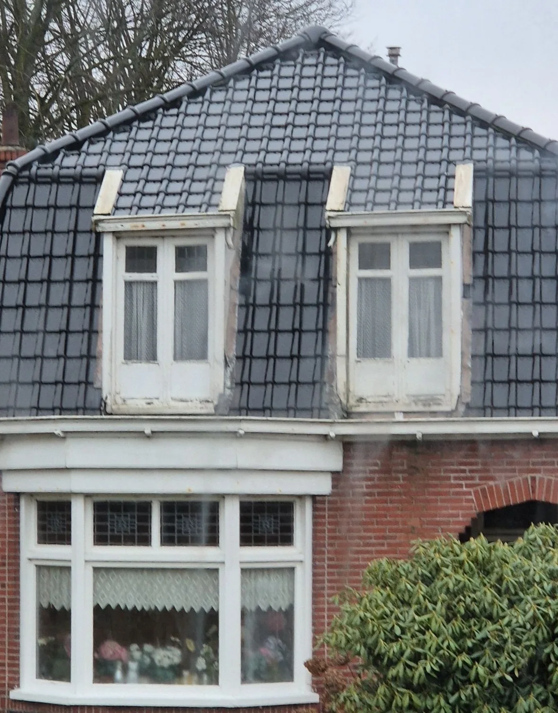
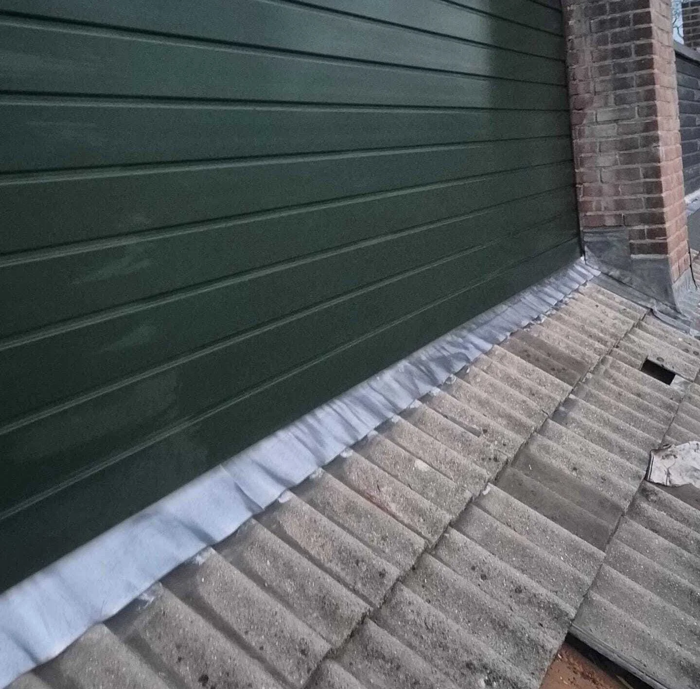
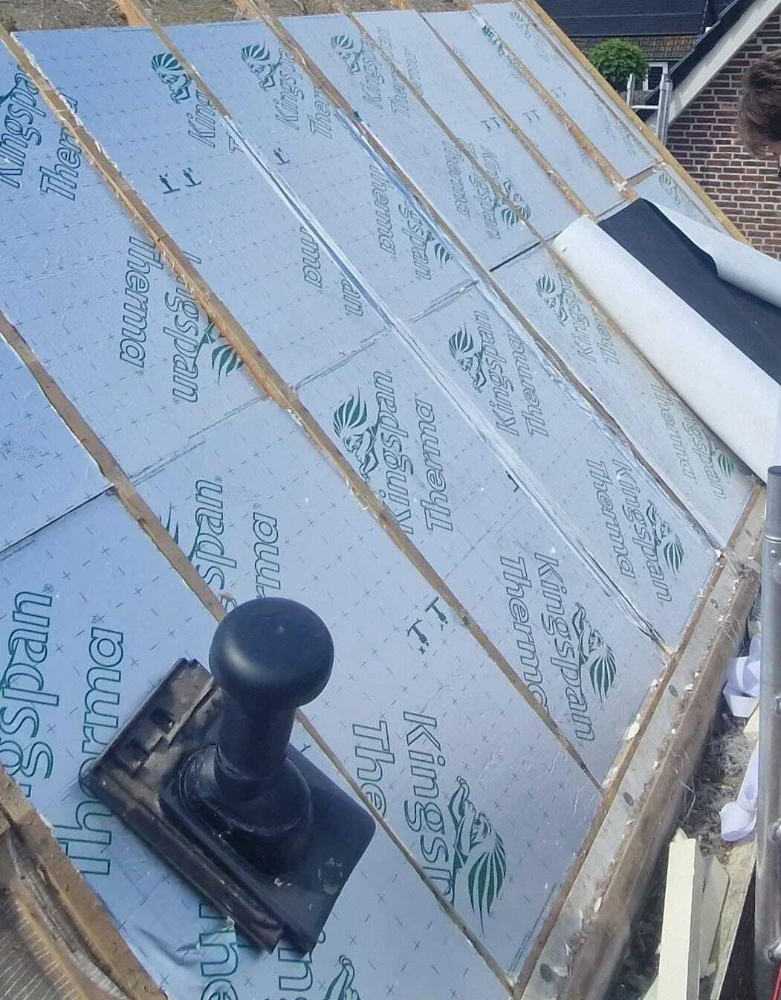
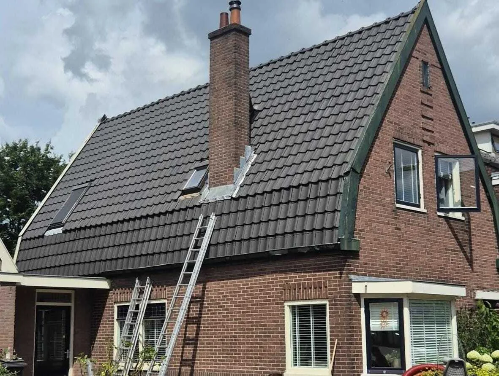
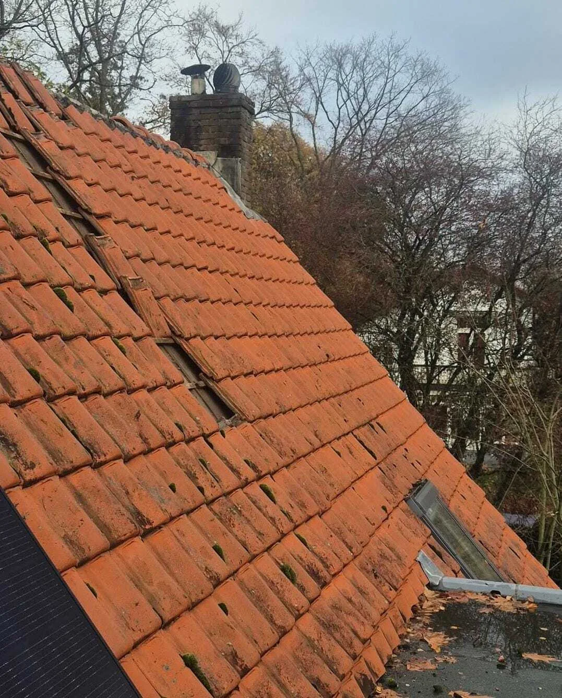
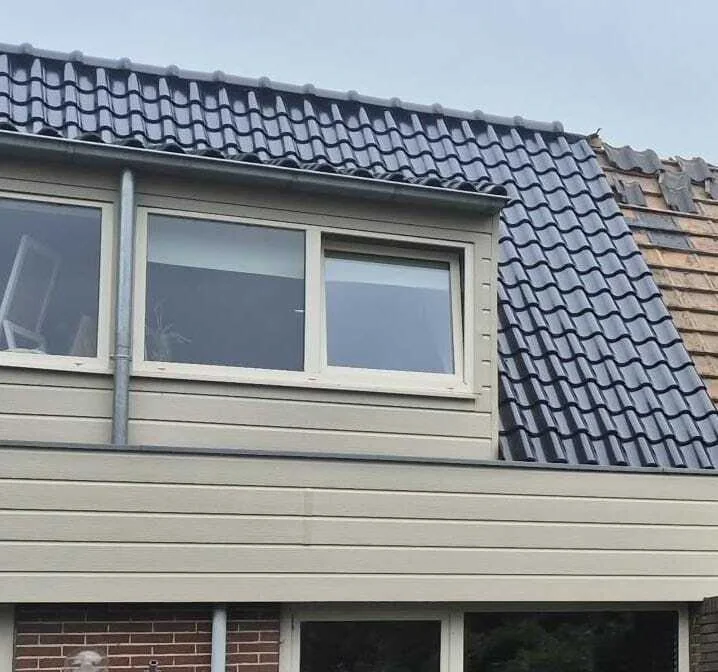
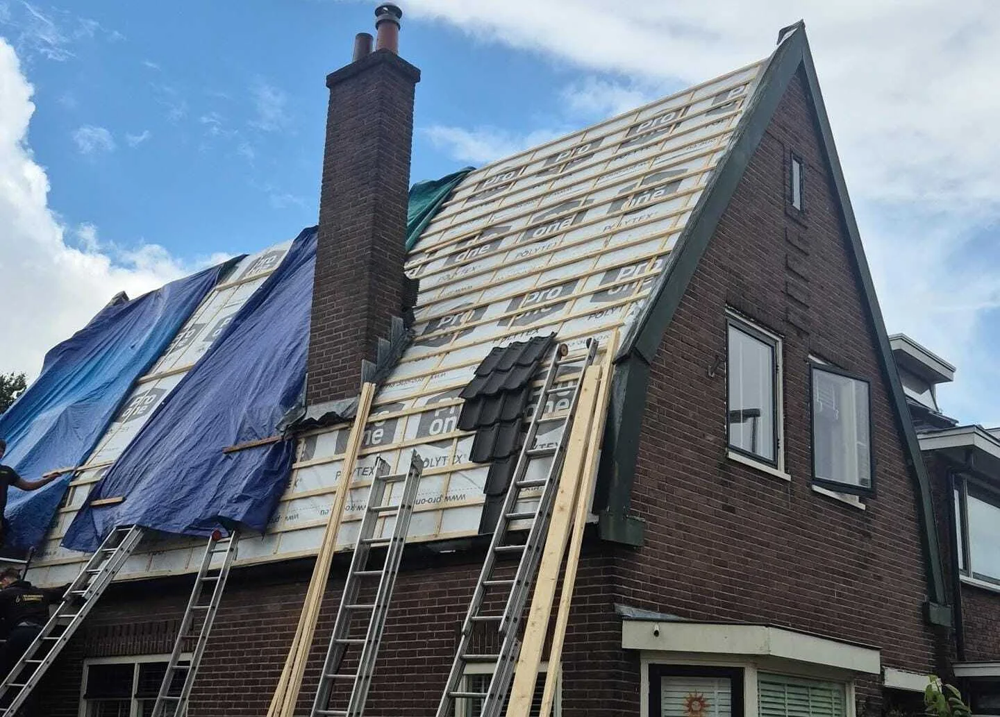
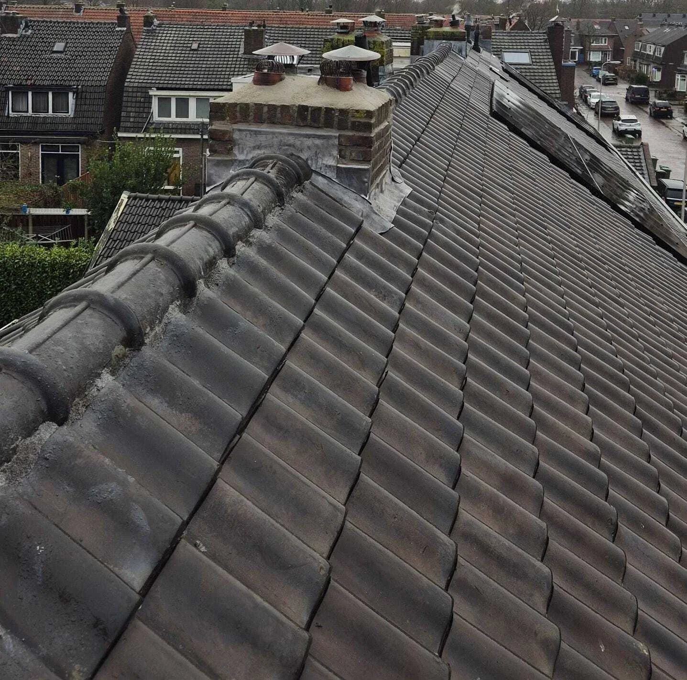
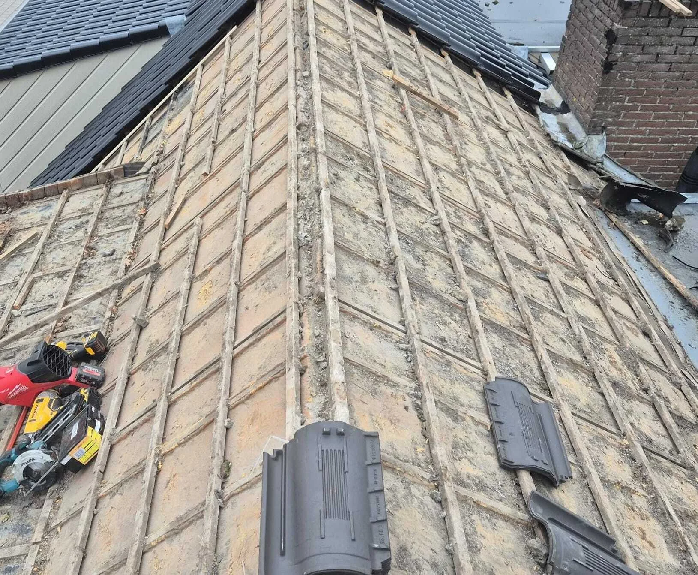
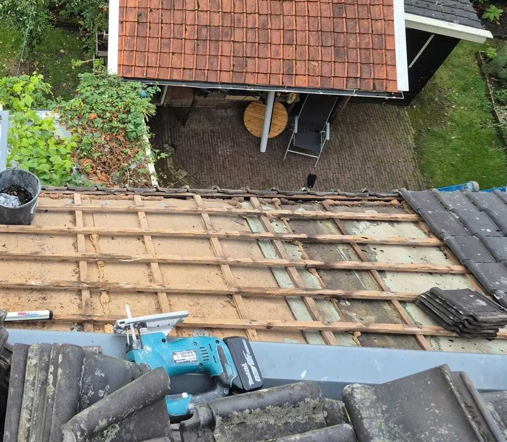

Cluster 13
Dakrenovatie
Een thematische kennisbanksectie met een pillarpagina en ondersteunende artikelen. Begin bij de hoofdpagina voor overzicht, of kies direct het specifieke onderwerp dat past bij uw situatie.

Artikelen in dit cluster
De pillar pagina geeft het overzicht. De ondersteunende blogs behandelen deelvragen, signalen, kosten, risico's en praktische keuzes.

Aansluitingen: schoorstenen, dakkapellen en dakramen, de zwakke schakelOndersteunende blog
Dakisolatie combineren met renovatie, is dat aan te raden?Ondersteunende blog
Dakpannen vervangen bij renovatieOndersteunende blog Dakrenovatie bij een hellend dak: wanneer het dak zelf het probleem wordtPillar pagina
Dakrenovatie of blijven reparerenOndersteunende blog
Hoelang gaat een gerenoveerd hellend dak mee?Ondersteunende blog Onderdak en waterkerende lagenOndersteunende blog
Onderdak en waterkerende lagenOndersteunende blog

Panlatten en tengels vervangen bij dakrenovatieOndersteunende blog
Risico op lekkage bij Nokken, vorsten en dakrandenOndersteunende blog
Veelgemaakte fouten bij dakrenovatieOndersteunende blog Wanneer is dakrenovatie bij een hellend dak echt nodig?Ondersteunende blog
Wanneer is dakrenovatie bij een hellend dak echt nodig?Ondersteunende blog
 Wanneer is een volledige dakrenovatie onvermijdelijk?Ondersteunende blog
Wanneer is een volledige dakrenovatie onvermijdelijk?Ondersteunende blog

Wat gebeurt er écht onder de dakpannenOndersteunende blog